タイのベスト地獄であるワットパーラックローイを観た後、ナコーンラチャシーマ市内に戻り、
ワットパヤップという寺に寄ってみた。
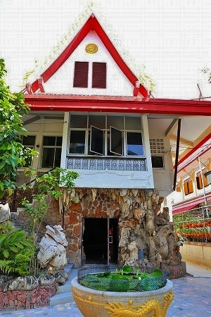
ワットパラックローイの立体コンクリ曼荼羅世界があまりにも素晴らしくて、
尻子玉を抜かれたような状態でこの寺に来た。
大した期待もせずに本堂の中に入ってみると…
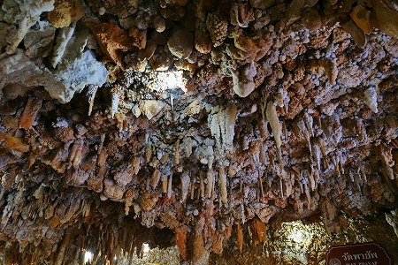
おおおお！
外見はごくごく普通のタイのお寺なのに内部は鍾乳石にびっしり覆われているではないか！
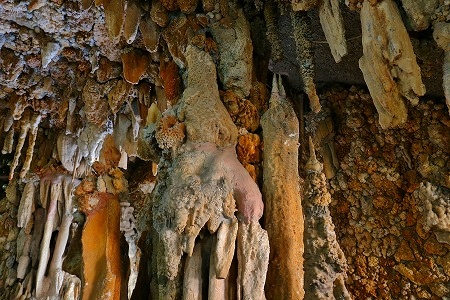
まるで本物の鍾乳洞に迷い込んだような気分になる。凄い！
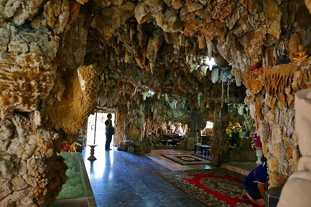
一体どれ位の年月をかけて造ったのだろう？
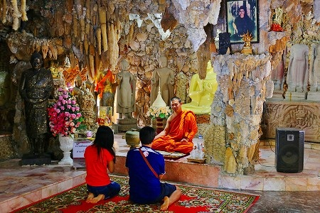
若いカップルがお坊さんからありがたい話を頂戴しているところだった（多分）。
鍾乳石に囲まれた中、何の違和感もなく過ごせる貴方達、グレイトだよ。
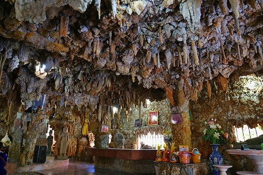
それにしてもこれだけの鍾乳石を貼り付けるとは相当な労力とお見受けしましたよ。
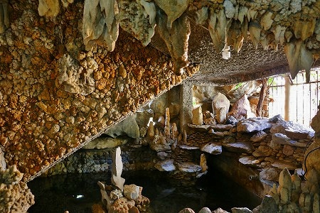
かなり隅から隅まで鍾乳石に覆われている。
たまには天井から鍾乳石が落ちてきたりしないのだろうか？心配だ。
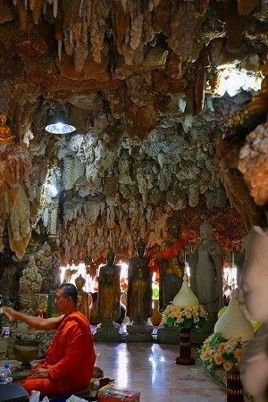
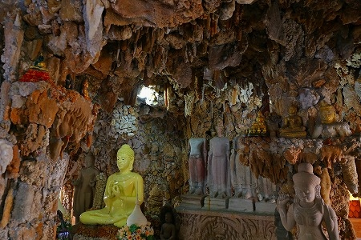
鍾乳石の合間合間に仏像が設置されており、シュールな事この上なし。
ところで。
境内にはこの鍾乳洞風のお堂とは別にお堂がある。
規模からしてこちらの方が本堂に近い存在なのだと思うが、中がどうも荒れ果てている。
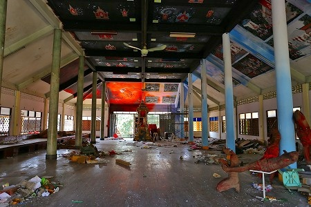
お邪魔しますよ。
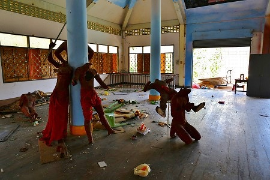
こ…これはもしかして…
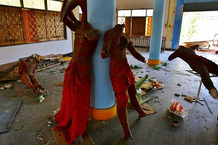
恐らく立体地獄！
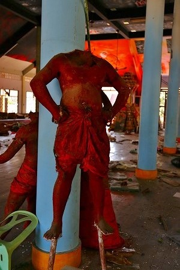
とはいえかなり荒れ果てている。
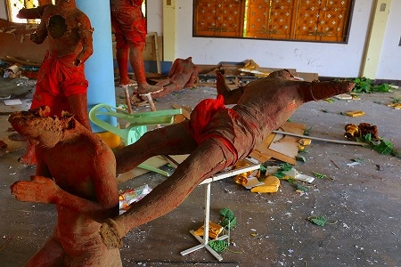
恐らく数週間以内には撤去されているだろうなあ、的レベル。
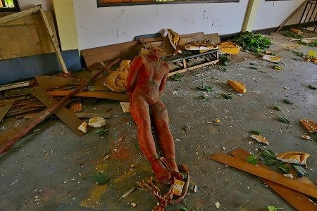
屋外には地獄の絵が大量に積まれていた。
今思えばもらって来ればよかったなあ。
タイの地獄をほぼ網羅しているサイト「
泰国の変なスポット」さんを今確認したらこの元地獄も訪問されていた。
流石です。
次のパトロールへGO！